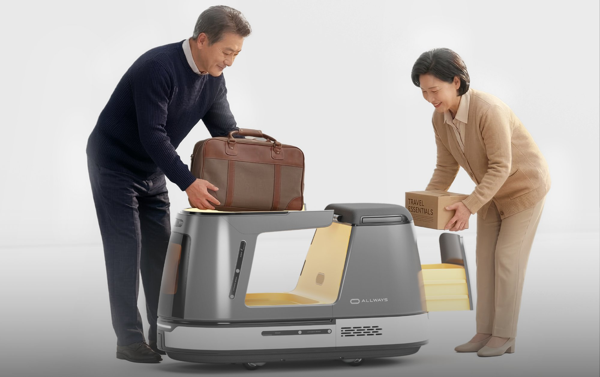
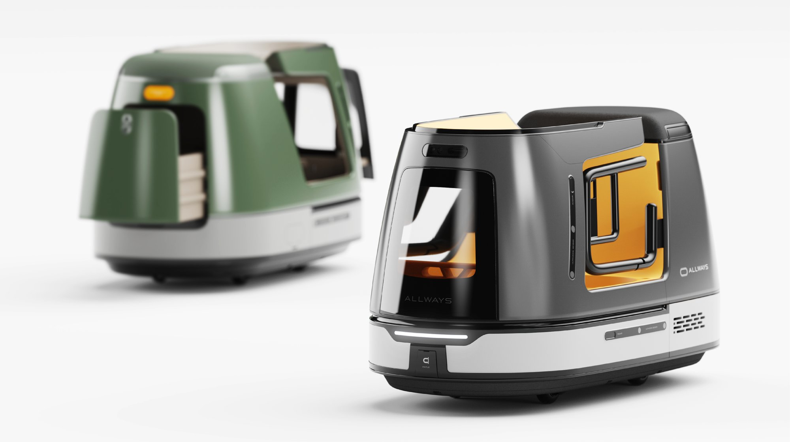
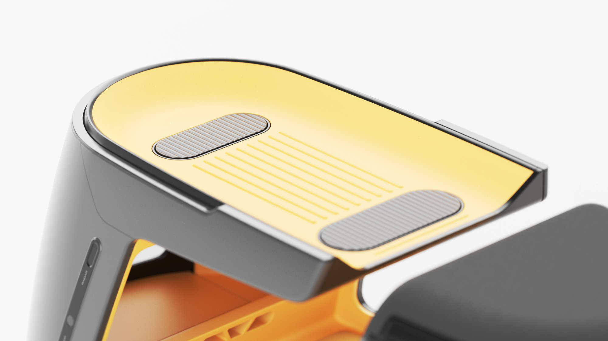
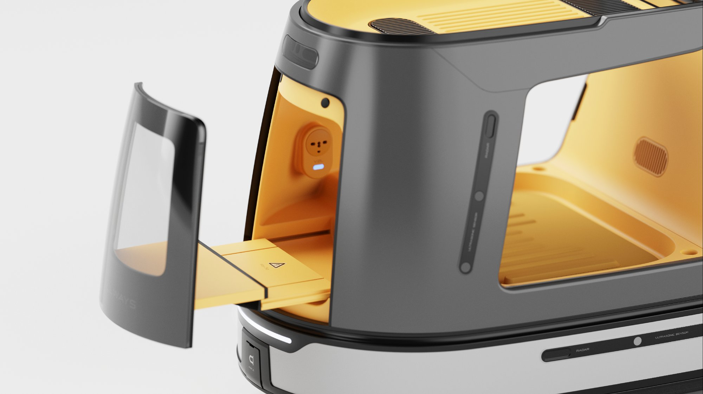
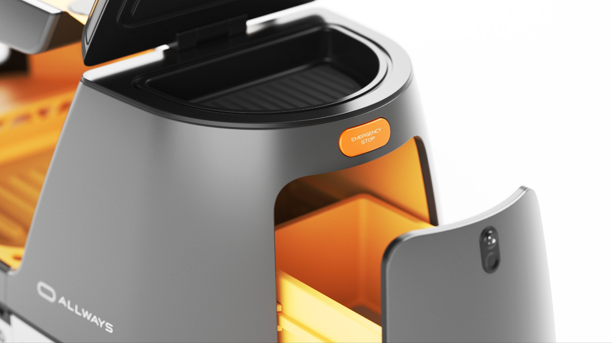
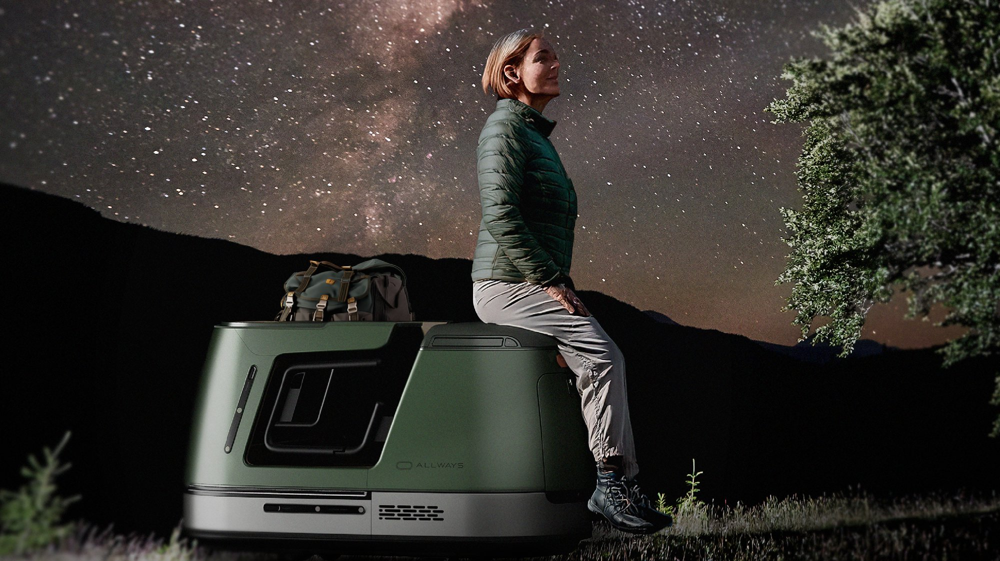
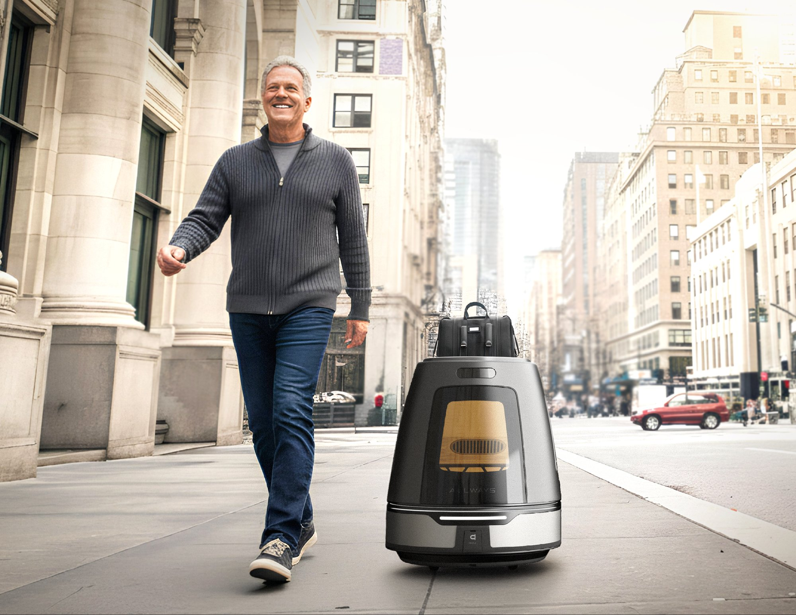

View 01액티브 시니어를 위한 여정 동반 모빌리티형 로봇
고령화 사회로 접어든 오늘날, 은퇴 후에도 단순한 휴식이 아닌 여행 트레킹 등 외부 활동을 즐기려는 액티브 시니어가 증가하고 있다. 이들은 여가를 통해 자율성과 삶의 활력을 추구하지만, 체력 저하, 장거리 이동의 피로, 낯선 환경에 대한 불안 등으로 인해 활동 지속에 제약을 겪는다. 이에 따라 신체적 부담을 줄이고 외부 활동의 자율성과 안전성을 높이는 액티브 시니어를 위한 여행 동반 로봇 ALLWAYS를 제안한다.
액티브 시니어가 겪는 페인포인트를 크게 4가지 그룹으로 묶어 시니어 맞춤 정보 제공과 체력 및 이동 경험 향상, 원스톱 경험 서비스, 데이터 관리 및 보상을 기회요소로 발견하였고, 조형적으로 전체적으로 곡선이 아래로 갈수록 넓어지며 안정적이고 부드러운 조형으로 친숙한 이미지로 사용자에게 다가간다. 중앙에는 넓게 열린 오픈 트레이 공간과 전면으로 확장되는 수납함, 내부를 볼 수 있는 글라스를 배치해 솔리드한 실루엣에 개방감을 더했다.





